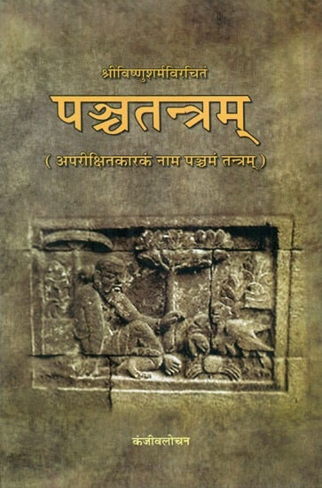

Sanskrit Stories

Sanskrit, one of the oldest languages in the world, is not just a language of sacred texts but also a treasure trove of knowledge and wisdom. Through captivating stories from the Panchatantra and Hitopadesha, children can explore life lessons, moral values, and the beauty of the Sanskrit language in an engaging way.
Why Learn Sanskrit Through Stories?
Cultural Connection – Gain insights into India’s ancient heritage.
Moral Values – Each story imparts a meaningful lesson.
Language Learning – Develop a basic understanding of Sanskrit words and phrases.
Interactive & Fun – Stories are enhanced with exercises and activities.
Timeless Collections of Sanskrit Tales
1.Panchatantra – The Five Principles of Wisdom
The Panchatantra, written by Vishnu Sharma, is a collection of fables that teach wisdom through animal characters. These stories focus on five themes:
Mitra-labha (Gaining Friends) – Tales about forming good friendships.
Mitra-bheda (Losing Friends) – Cautionary stories about betrayal and deceit.
Kākolūkīyam (Crows and Owls) – Stories about strategy and intelligence.
Labdhapranāśam (Loss of Gains) – Lessons on greed and carelessness.
Aparīkṣitakārakaṃ (Hasty Actions) – Teaching patience and thoughtfulness.
2. Hitopadesha – The Book of Beneficial Advice
Written by Narayana, the Hitopadesha is inspired by the Panchatantra and contains stories that impart practical wisdom. These tales are often used to teach moral values in an easy-to-understand manner.
Example Stories:
The Four Friends – A story about cooperation and teamwork.
The Foolish Brahmin and the Thief – Highlights the dangers of blind trust.
The Blue Jackal – A tale about deception and its consequences.